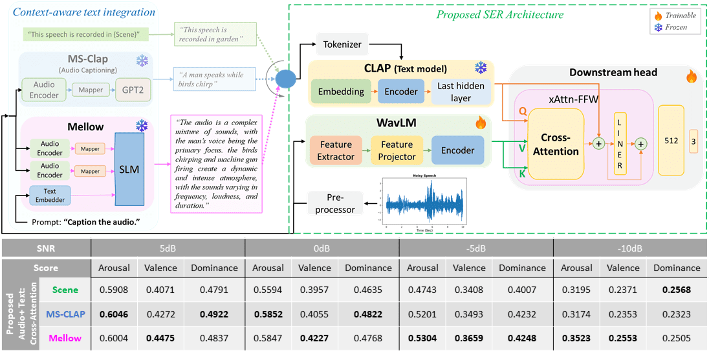
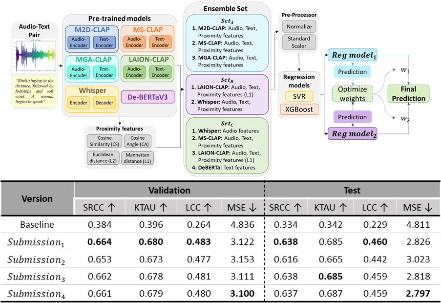
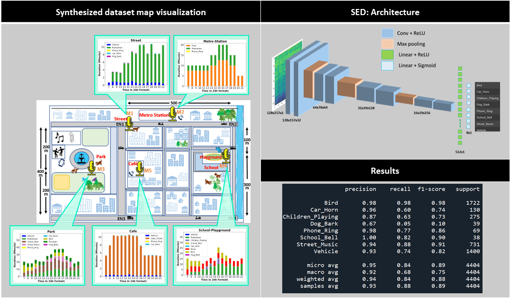
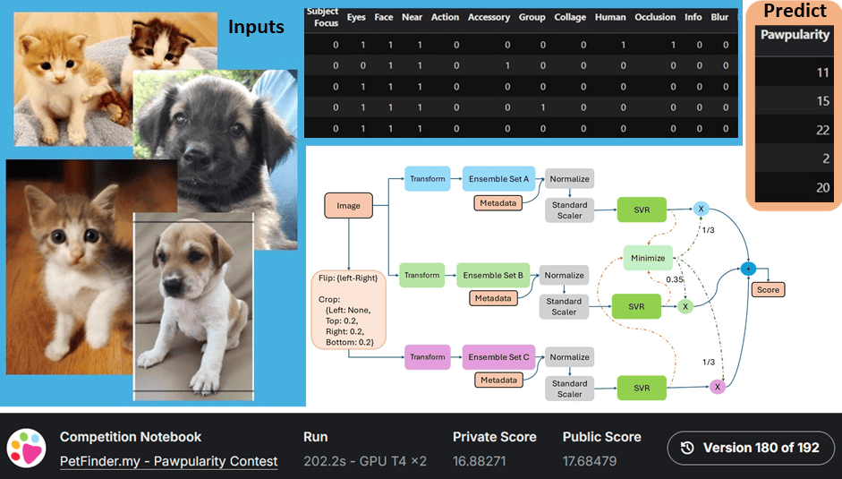

About Me
Hi, I’m Snehit Chunarkar, a PhD researcher in Machine Learning at NTHU,
exploring Noise-Robust Speech Emotion Recognition (SER) and Multimodal Audio-Text Learning.
🏆 ICASSP 2026 Grand Challenge [XACLE]: 2nd Place
🚀 Building multimodal AI systems for real-world noisy environments
I’m particularly interested in:
- Speech & audio representation learning
- Multimodal Transformers and cross-modal fusion
- Emotion reasoning and context-aware AI
- Visualization of embeddings & interpretability
Education
PhD in Electrical Engineering (Ongoing)
Master’s in Instrumentation and Signal Processing
Bachelor’s in Instrumentation Engineering
Research & Publications
Speech Emotion Recognition (SER) systems often face challenges of real-world noises, which limits their robustness outside controlled environments. To tackle this, the recent bimodal approach fusing audio with textual inputs has been in the spotlight of researchers. However, prior work predominantly relied on transcripts or coarse scene descriptions, which offer limited semantic depth. In this work, we introduce reasoning-driven captions generated by Mellow, a small audio language model, for context-aware textual encoding of high-order semantic information. These reasoning-based captions capture contextualized cues beyond lexical transcripts, thus providing balanced emotional grounding. Our experiments demonstrate that reasoning-based captions consistently improve SER performance under noisy conditions, particularly at low signal-to-noise ratios, where conventional transcripts mainly benefit valence but compromise arousal and dominance. In contrast, our proposed reasoning-rich captions achieve robust and balanced prediction across arousal, valence, and dominance, setting a new direction for noiseresilient multimodal SER.
This paper presents an ensemble framework for predicting semantic audio-text alignment for GC-12: x-to-audio alignment (XACLE) in the ICASSP 2026: SP Grand Challenge. We leverage ensemble sets comprising carefully chosen complementary model features: M2D-CLAP, MS-CLAP, MGACLAP, LAION-CLAP, Whisper and DeBERTaV3; And Augmented with proximity features: cosine similarity, cosine angle, L1, and L2 norms. These diverse representations are combined and fed into optimized regressors to robustly estimate human-perceived semantic correlation scores for audio-text pairs. With the proposed approach, our submission achieves 2nd rank in the official leaderboard, highlighting significant boosts from incorporating both deep model and handcrafted proximity features with an optimized weighted two regression model approach.
Automated acoustic understanding, e.g., sound event detection and acoustic scene recognition, is an important research direction enabling numerous modern technologies. Although there is a wealth of corpora, most, if not all, include acoustic samples of scenes/events in isolation without considering their interconnectivity with locations nearby in a neighborhood. Within a connected neighborhood, the temporal continuity and regional limitation (sound-location dependency) at distinct locations creates noniid acoustics samples at each site across spatial-temporal dimensions. To our best knowledge, none of the previous data sources takes on this particular angle. In this work, we present a novel dataset, the Spatio-temporally Linked Neighborhood Urban Sound (STeLiN-US) database. The dataset is semi-synthesized, that is, each sample is generated by leveraging diverse sets of real urban sounds with crawled information of real-world user behaviors over time. This method helps create a realistic large-scale dataset, and we further evaluate it through perceptual listening tests. This neighborhood-based data generation opens up novel opportunities to advance user-centered applications with automated acoustic understanding. For example, to develop real-world technology to model a user’s speech data over a day, one can imagine utilizing this dataset as the user’s speech samples would modulate by diverse sources of acoustics surrounding linked across sites and temporally by natural behavior dynamics at each location over time.
With multiple languages spoken in the world by different groups of people, we may encounter mixed language speech to hear, especially while vlogging in a different country or during interviews with voice dubbing. The appropriate language speech audio can be extracted from a mixed one using a separation mechanism. This paper proposes a DNN model to perform such a language separation task. Different features like Mel Frequency Cepstrum Coefficient (MFCC), Power Spectrum, and Relative Spectral Transformed Perceptual Linear Prediction coefficient (RASTA-PLP) are extracted from the mixed language speech as the input to the DNN. For the training target, the Short-Time Fourier Transform (STFT) Spectral Mask is considered. To understand the improvement on the speech, the processed speech is then evaluated for its intelligibility and quality. Here Short-time Objective Intelligibility (STOI) and Perceptual Evaluation of Speech Quality (PESQ) scores are used to compare the Intelligibility and Quality of the separated language speech signal processed by the DNN. It can be observed from the results that the language separated audio using a trained DNN model has shown improved Intelligibility and Quality.
This paper presents a novel piecewise linear (PWL) approximation method for designing a highly precise nonlinear activation function tailored for hardware implementation of inference models. It is developed as an Adaptive Step-Size-based Recursive Algorithm (ASRA) method, incorporating the maximum allowable error (ϵ) as an input parameter. PWL functions are realized with minimal computational overhead, utilizing only addition operations and coefficient memory, thus avoiding multiplications. With fewer resources, the proposed method allows for the accurate approximation of nonlinear functions. The hardware implementation uses a Synopsys Design Compiler with a TSMC 90-nm library. Performance comparison in terms of area, delay, and power consumption demonstrates the effectiveness of the proposed approach.
Projects
Enhanced Speech Emotion Recognition (SER) in a noisy environment by integrating Reasoning-enriched caption with speech using Cross-Attention.
Improved SER by 32% over the conventional Audio-Only approach at SNR:-10dB.
I offer a deployable best-trained model with an overall size of 390 million (including 98M finetuned).

Developed a pipeline to predict Audio-Text alignment score for ICASSP (2026) SP Grand Challenge: GC12-XACLE
Our proposed pipeline's prediction on the Test data ranked #2 on the leaderboard.
Check out the Official Leaderboard 🥈.

STeLiN-US: A spatio-temporally linked neighbourhood urban sound database.
I synthesised a dataset mimicking a real-world environment setting (e.g., overlapping events, spatial distance scaling,
temporal correlation, etc.) to help train Sound Event Detection systems in real-world settings.

I have developed an ML architecture to predict a pet's appeal score, which helps boost their adoption chances.
Course "11230EE 655000: Machine Learning" at NTHU use this competition for a course project where the ranking of teams decides the grade. I ranked 2nd among all course participants.

Skills
Languages
Libraries
Softwares
Cloud Computing
Tools
Contact
Email: snehitc@gmail.com